import numpy as np
import matplotlib.pyplot as plt
import matplotlib.lines as mlines
from scipy.special import digammaDetection sensitivity to read count noise
Background
See all-hands memo.
Theory
Read count model
Poisson counting noise mixed with a latent distribution. For viral read counts \(C\) and total per-sample read count \(n\):
\(C \sim Poisson(n X)\),
where \(X\) follows a latent distribution (specified below). This latent distribution should increase in expectation with the prevalence and also capture non-Poisson noise.
We can show that the coefficient of variation obeys:
\(CV[C]^2 = \frac{1}{n E[X]} + CV[X]\).
That is, once we expect to see more than one read, the CV of the latent distribution will start to dominate the variation in counts.
Properties of latent distributions
We need to specify and parameterize the latent distribution. Each distribution will have its own usual parameters, but we want to put them on common footing. This means specifying:
- A central value (mean, median, etc)
- A measure of spread (stdev, etc).
For spread, we will use the coefficient of variation. Caveat: it’s not clear that this should be constant as the the mean grows. Need to think about this mechanistically.
For central value, we’ll try specifying two different ways:
- Arithmetic mean = prevalence X P2RA factor
- Geometric mean = prevalence X P2RA factor
The former is more natural for the gamma distribution, the latter for the lognormal, but we’ll try each both ways for comparison.
Gamma distribution
- MaxEnt distribution fixing \(E[X]\) and \(E[\log X]\)
- Usually specified by shape parameter \(k\) and scale parameter \(\theta\)
- \(AM = E[X] = k\theta\)
- \(GM = \exp E[\log X] = e^{\psi(k)} \theta\), where \(\psi\) is the digamma function.
- \(Var[X] = k \theta^2\)
- \(CV[X]^2 = 1/k\)
- \(AM / GM = k e^{-\psi(k)} \sim k e^{1/k}, k \to 0\). This is exponentially big in \(CV^2\).
- On linear scale, density has an interior mode when \(k > 1\), a mode at zero when \(k = 1\) and a power-law sigularity at zero when \(k < 1\).
- On a log scale, the density of \(Y = \log X\) is: \(f(y) \propto \exp[ky - e^y / \theta]\). Has a peak at \(\hat{y} = \log \theta k\), slow decay to the left, fast decay to the right.
Log-normal distribution
- MaxEnt distrib fixing geometric mean and variance
- Specified by mean and variance of \(\log X\)
- \(AM = e^{\mu + \sigma^2 / 2}\)
- \(GM = e^{\mu}\)
- \(Var[X] = [\exp(\sigma^2) - 1] \exp(2 \mu + \sigma^2)\)
- \(CV[X]^2 = e^{\sigma^2} - 1\)
- \(AM / GM = e^{\sigma^2 / 2}\), linear in CV for large CV.
Both distributions have \(AM > GM\). But it grows much faster with CV for Gamma.
Parameters
sampling_period = 7
daily_depth = 1e8
sampling_depth = sampling_period * daily_depth
doubling_time = 7
growth_rate = np.log(2) / doubling_time
# Boston metro area
population_size = 5e6
# P2RA factor (roughly covid in Rothman)
# normalize by the fact that we estimate per 1% incidence/prevalence there
p2ra = 1e-7 / 1e-2max_prevalence = 0.2
max_time = np.ceil(np.log(population_size * max_prevalence) / growth_rate)
time = np.arange(0, int(max_time) + sampling_period, sampling_period)
prevalence = np.exp(growth_rate * time) / population_size
rng = np.random.default_rng(seed=10343)Simulation
Threshold detection
def get_detection_times(time, counts, threshold: float):
indices = np.argmax(np.cumsum(counts, axis=1) >= threshold, axis=1)
# FIXME: if never detected, indices will be 0, replace with -1 so that we get the largest time
# indices[indices == 0] = -1
return time[indices]Parameterization
def params_lognormal(mean, cv, mean_type):
sigma_2 = np.log(1 + cv**2)
if mean_type == "geom":
mu = np.log(mean)
elif mean_type == "arith":
mu = np.log(mean) - sigma_2 / 2
else:
raise ValueError("mean_type must be geom|arith")
return mu, np.sqrt(sigma_2)
def params_gamma(mean, cv, mean_type):
shape = cv ** (-2)
if mean_type == "geom":
scale = mean * np.exp(-digamma(shape))
elif mean_type == "arith":
scale = mean / shape
else:
raise ValueError("mean_type must be geom|arith")
return shape, scaleCount simulation
def simulate_latent(
mean,
cv: float, # coefficient of variation
mean_type: str, # geom | arith
distribution: str, # gamma | lognormal
num_reps: int = 1,
rng: np.random.Generator = np.random.default_rng(), # CHECK
):
size = (num_reps, len(mean))
if distribution == "gamma":
shape, scale = params_gamma(mean, cv, mean_type)
return rng.gamma(shape, scale, size)
elif distribution == "lognormal":
mu, sigma = params_lognormal(mean, cv, mean_type)
return rng.lognormal(mu, sigma, size)
else:
raise ValueError("distribution must be gamma|lognormal")
def simulate_counts(
prevalence,
p2ra: float,
sampling_depth: float,
cv: float, # coefficient of variation
mean_type: str, # geom | arith
latent_dist: str, # gamma | lognormal
num_reps: int = 1,
rng: np.random.Generator = np.random.default_rng(), # CHECK
):
relative_abundance = p2ra * prevalence
lamb = simulate_latent(relative_abundance, cv, mean_type, latent_dist, num_reps, rng)
counts = rng.poisson(sampling_depth * lamb)
return countsTest latent params
t = np.arange(100)
mean = 0.01 * np.exp(t / 7)
cvs = [0.5, 1.0, 2, 4]
num_reps = 1000
for cv in cvs:
latent = simulate_latent(mean, cv, "arith", "gamma", num_reps, rng)
plt.semilogy(t, np.mean(latent, axis=0))
plt.semilogy(t, np.std(latent, axis=0))
plt.semilogy(t, mean, "--k")
plt.semilogy(t, mean * cv, ":k")
plt.title(f"CV = {cv}")
plt.show()
for cv in cvs:
latent = simulate_latent(mean, cv, "arith", "lognormal", num_reps, rng)
plt.semilogy(t, np.mean(latent, axis=0))
plt.semilogy(t, np.std(latent, axis=0))
plt.semilogy(t, mean, "--k")
plt.semilogy(t, mean * cv, ":k")
plt.title(f"CV = {cv}")
plt.show()
for cv in cvs:
latent = simulate_latent(mean, cv, "geom", "gamma", num_reps, rng)
plt.semilogy(t, np.exp(np.mean(np.log(latent), axis=0)))
plt.semilogy(t, np.std(latent, axis=0))
plt.semilogy(t, np.mean(latent, axis=0))
print(np.std(latent, axis=0) / np.mean(latent, axis=0))
plt.semilogy(t, mean, "--k")
plt.title(f"CV = {cv}")
plt.show()
for cv in cvs:
latent = simulate_latent(mean, cv, "geom", "lognormal", num_reps, rng)
plt.semilogy(t, np.exp(np.mean(np.log(latent), axis=0)))
plt.semilogy(t, np.std(latent, axis=0))
plt.semilogy(t, np.mean(latent, axis=0))
plt.semilogy(t, mean, "--k")
plt.title(f"CV = {cv}")
plt.show()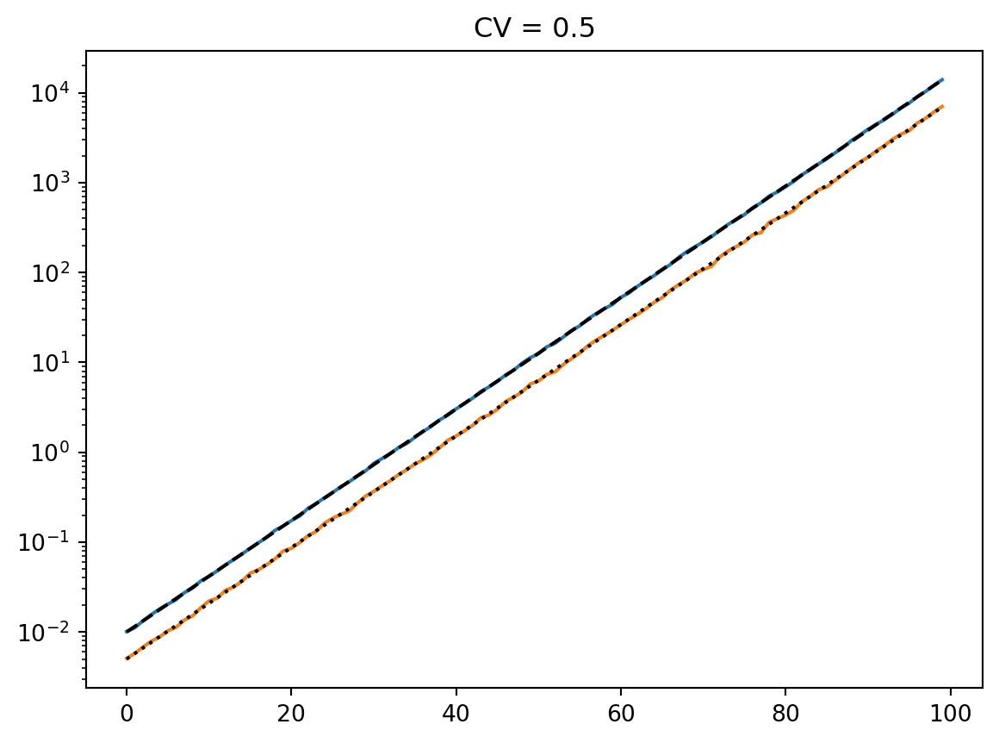
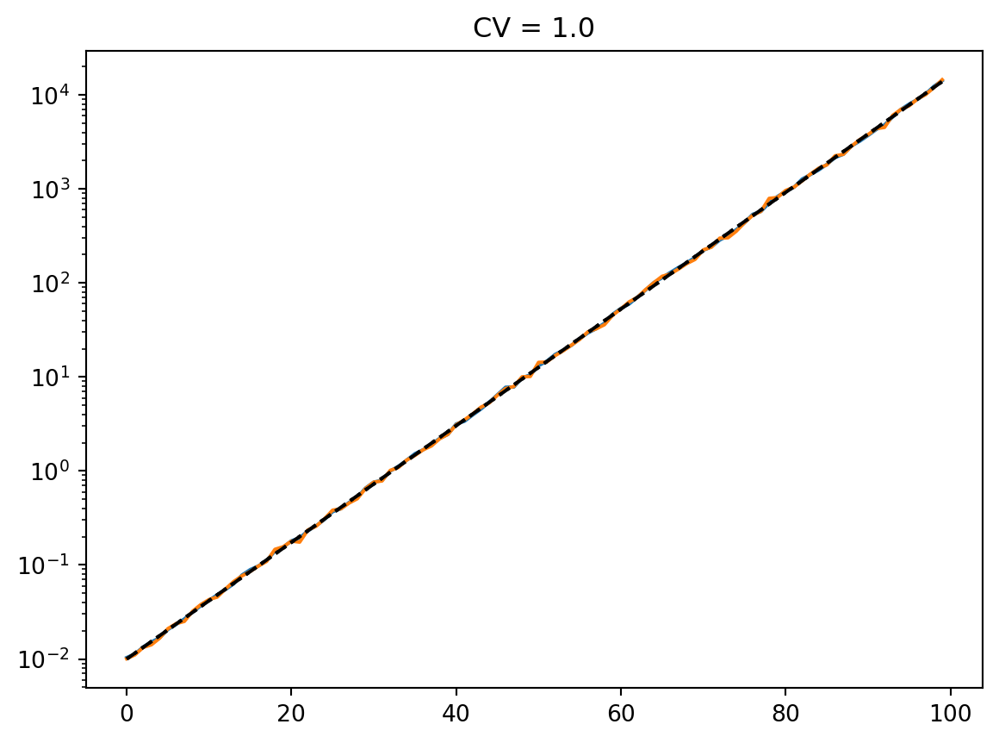
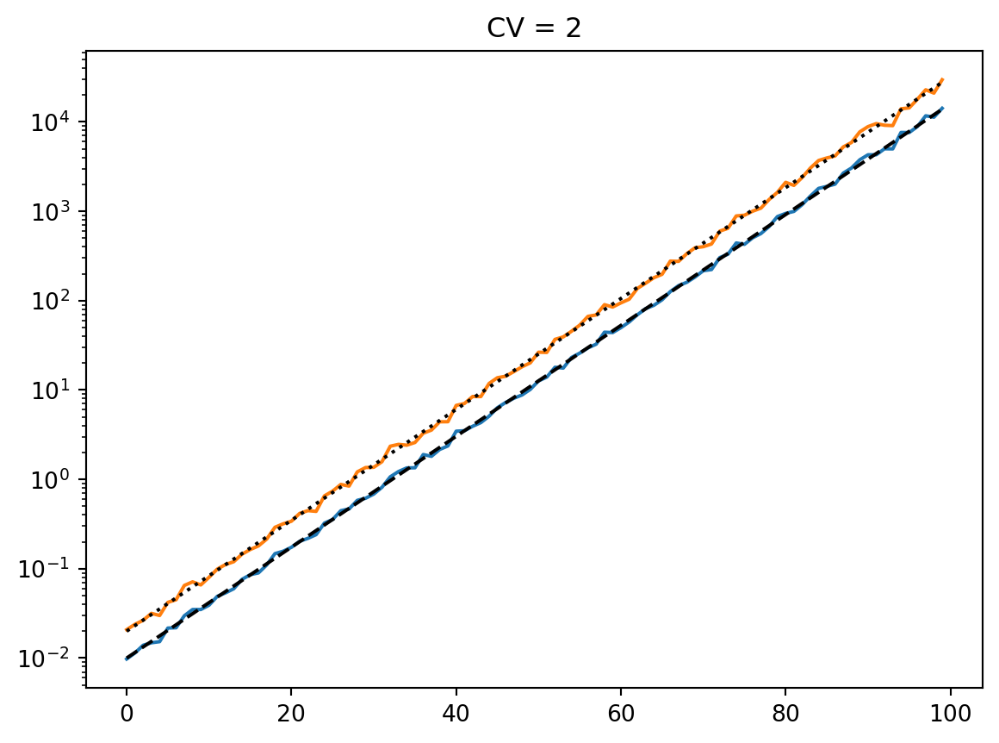
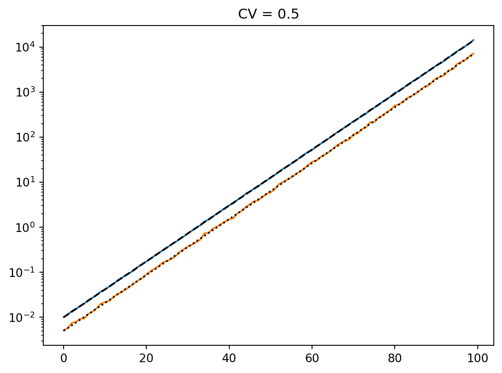
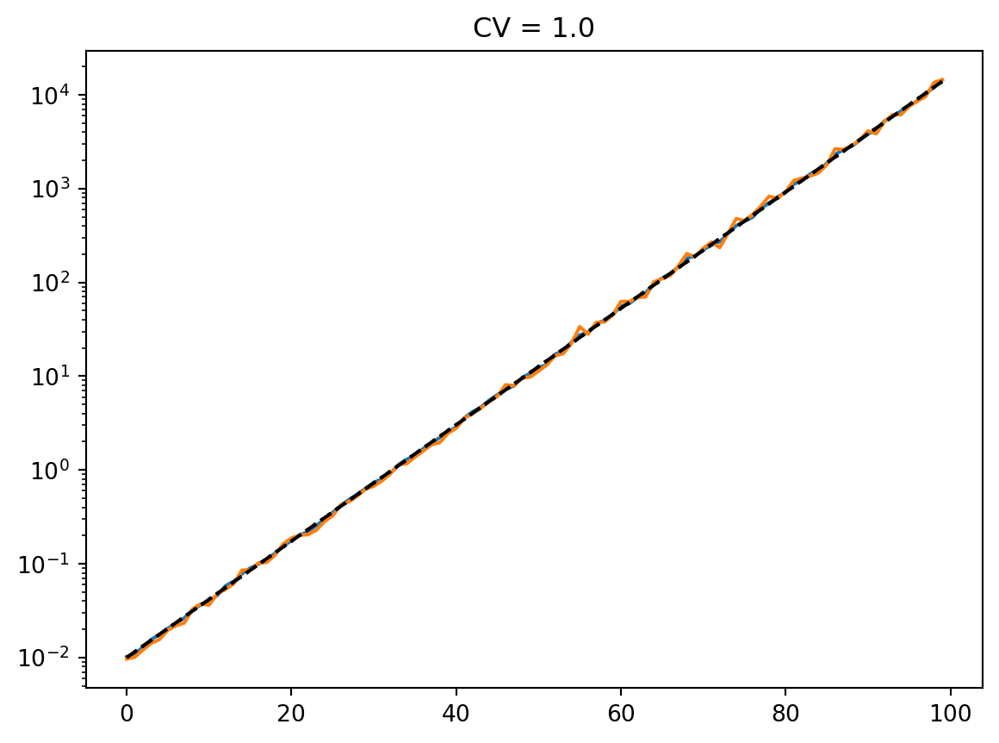
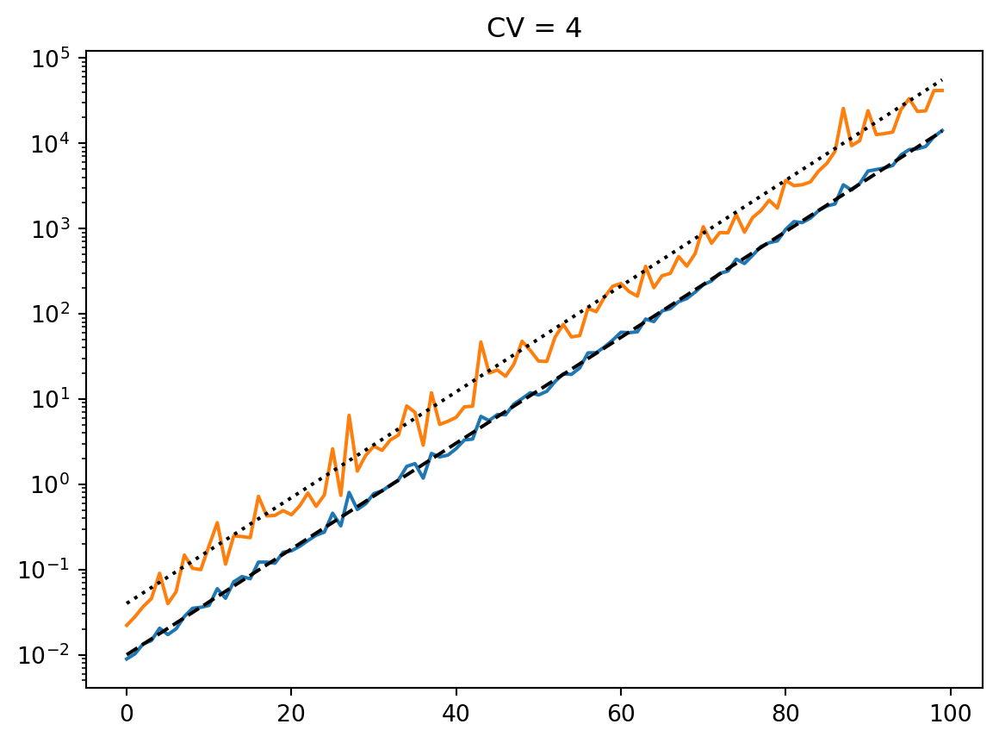
[0.50348026 0.49182015 0.50282823 0.50870395 0.49265948 0.50533411
0.52211055 0.50050186 0.49085442 0.48295105 0.51659485 0.47924307
0.51916236 0.49989031 0.47911488 0.50655809 0.5040264 0.50973589
0.5259777 0.521355 0.51196868 0.50614298 0.5106999 0.52373657
0.47330863 0.50842704 0.51643281 0.47957447 0.50206644 0.50377273
0.49816772 0.51913592 0.52782476 0.49194066 0.51983427 0.52527224
0.49243682 0.49117164 0.5037379 0.48340348 0.4940295 0.49636163
0.52741949 0.49278562 0.50890312 0.51281443 0.47388754 0.51449679
0.49937058 0.48876435 0.50115377 0.52301337 0.50080361 0.50482404
0.50357979 0.50982194 0.48190781 0.49510878 0.48948755 0.48957791
0.49904929 0.49695378 0.4944266 0.49329813 0.51841087 0.49790695
0.49476528 0.48351475 0.51986067 0.48381848 0.49908738 0.49081166
0.50835463 0.49487533 0.49129641 0.51527339 0.50583592 0.49600538
0.49727427 0.50392921 0.49140025 0.50015994 0.49576992 0.50345842
0.49471129 0.51298593 0.47710101 0.47296923 0.4792705 0.51883331
0.49841553 0.51106549 0.51211019 0.48844829 0.50808292 0.51041238
0.49871134 0.49191981 0.47683314 0.51868499]
[0.98393079 1.02228662 1.02012703 0.98510473 0.99054394 1.05067537
0.98531434 1.01228511 0.98334931 1.01326723 0.97723524 0.98954736
1.03536915 1.01491756 1.01645102 0.97640239 0.97622787 0.98144578
0.97274661 1.01520805 0.95254337 1.00135342 0.97954303 1.00187655
1.06584758 1.00567692 1.00412554 0.97124493 0.9312591 0.99823349
0.963092 1.00199325 1.03445693 1.06515596 1.06077553 0.97742492
1.08236563 0.90886172 0.99237003 1.01603279 1.03544314 0.94547342
0.99914824 1.02062342 0.99032014 0.97735808 1.00704571 0.99753384
1.04174574 0.99912939 0.97997322 0.98636165 0.98046552 0.96440814
0.98053455 1.00069747 1.02727122 0.95428542 0.97861231 0.96537031
0.99165826 0.98666603 0.98276165 0.95895163 0.97315295 0.96513772
1.01242235 1.02112884 1.0552492 0.97147578 0.98236027 1.01597814
1.00647088 1.00451165 1.01165352 1.02227556 0.98477906 1.08072714
0.99728964 1.01029694 1.00368864 0.98316007 0.97854387 0.97504436
0.97201678 1.05501862 1.03827394 1.00967839 1.02932978 1.00375372
1.02989618 0.94712783 0.97704349 1.03746789 1.00793446 0.99466767
0.97315889 1.03402584 0.99440691 0.99421547]
[1.93348289 1.94075628 1.9371521 2.0596737 2.01922064 1.77050199
1.95359177 2.21491995 1.76238332 2.01896386 1.8359474 1.93522955
1.92304791 2.07436114 2.00112383 1.92611896 1.91318319 1.89199837
1.95239552 1.94197283 1.96052082 2.04660114 2.11607495 1.91440194
1.87350164 1.87829558 1.96142867 2.18442557 1.88364222 1.87840667
2.10924738 1.94424085 2.01537714 1.99424229 1.84297648 1.8983749
2.05230387 2.0670051 1.96440085 1.98658515 1.94209637 1.8520699
2.08009187 2.06838783 1.79127993 1.87616927 1.97531894 1.985033
2.11656599 1.89554444 1.95982964 2.12635557 2.03685668 1.90855538
2.019133 1.93651675 1.8725479 1.99982613 1.99215463 2.10543879
1.95080877 1.90585074 1.9536033 2.02331806 1.90023477 2.03508627
1.93722256 1.89147195 1.95247127 1.91292066 1.96191177 2.04529256
1.90620202 2.05602709 2.04635604 1.9964848 2.06337469 1.91445034
1.98958428 1.90751535 1.87740487 2.12006546 1.80767642 1.91483707
1.89387481 2.03026639 1.98127219 1.96318601 2.01879857 1.9100694
1.98198117 2.11591477 2.03354811 2.20515637 1.86657211 1.9549832
2.03214746 2.01828408 2.01163885 2.19198731]
[3.85885115 4.15112238 3.92872672 3.60005621 4.11774644 4.04874281
3.76652958 3.56179868 3.75387821 4.72929878 4.51766138 4.09093613
3.4065016 4.29871855 3.66379723 4.05704088 3.50161145 4.0989186
3.93898714 3.76942373 3.82458744 4.49414312 4.08017117 3.79421135
4.19901864 3.55467022 3.71045934 3.91660997 4.27304547 4.20155975
3.78045465 4.09401223 4.13905594 3.78531078 3.90054913 4.04997723
3.7416698 3.61782184 4.01523185 3.61314766 4.57979094 3.80476479
4.2427299 4.53425588 3.90922339 4.62143615 3.48617567 3.87590464
3.84146648 3.7905067 3.57560193 3.93392831 3.31075887 4.12729374
4.29561327 4.20645896 3.6806276 4.23596369 4.04506462 4.67984352
4.23507313 4.34065718 4.28223705 3.67078099 4.04157157 4.68677653
4.2690662 3.57520629 4.05247374 4.02668955 4.41856066 3.62780225
3.64177031 4.27659845 3.80032842 3.78244861 3.56100671 4.10671816
3.55325258 4.55545487 4.29575367 4.3634054 3.74042498 3.99472887
3.3625012 3.86508634 3.74088776 4.77547092 3.77768133 3.95763258
3.27596278 4.1696738 4.1919582 3.87427013 3.6489727 4.12122796
3.91741195 3.4060893 3.70814923 4.08789586]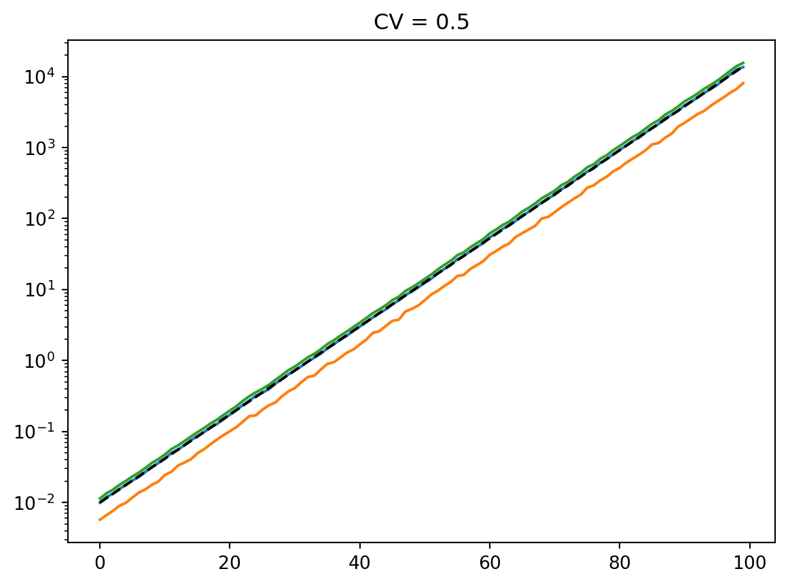
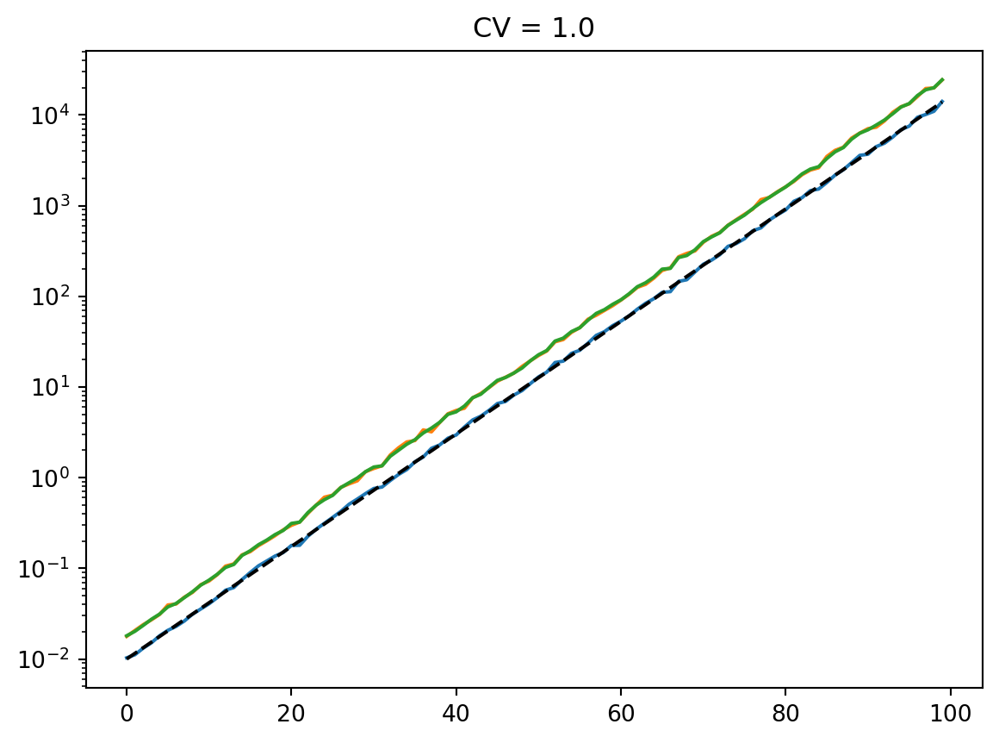
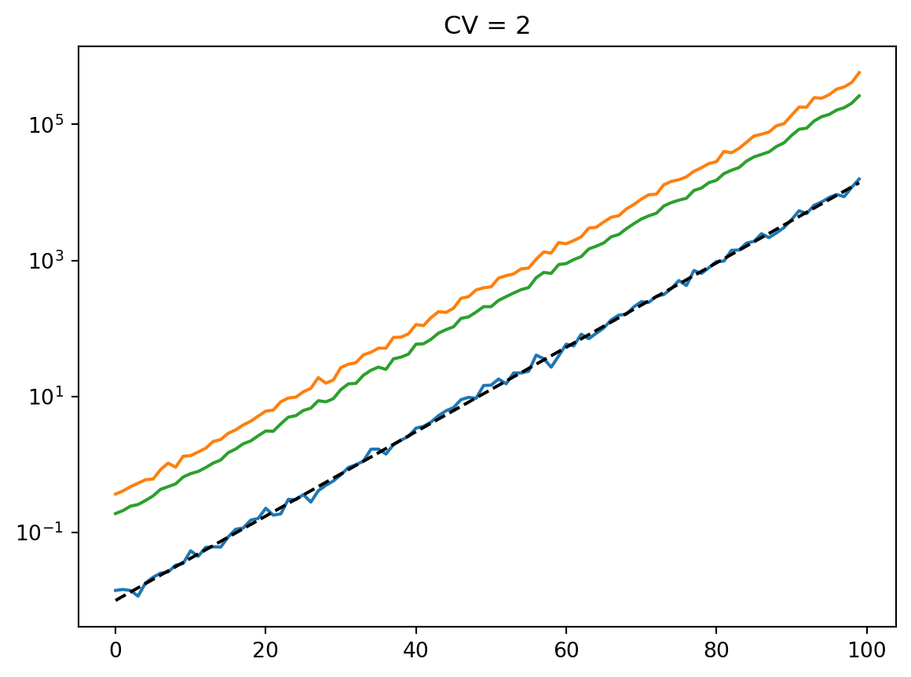
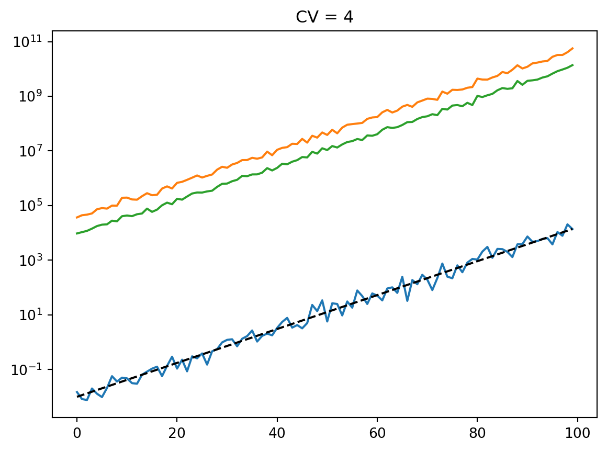
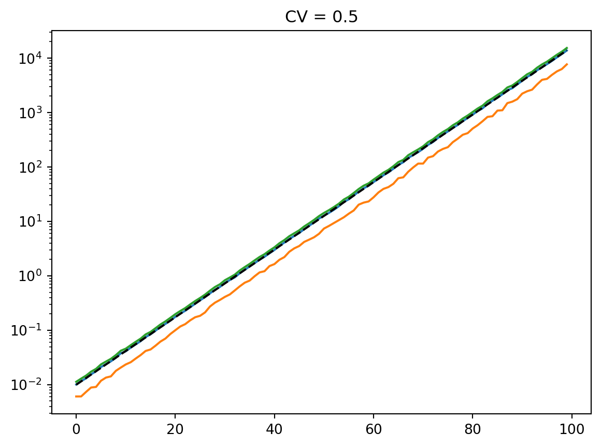
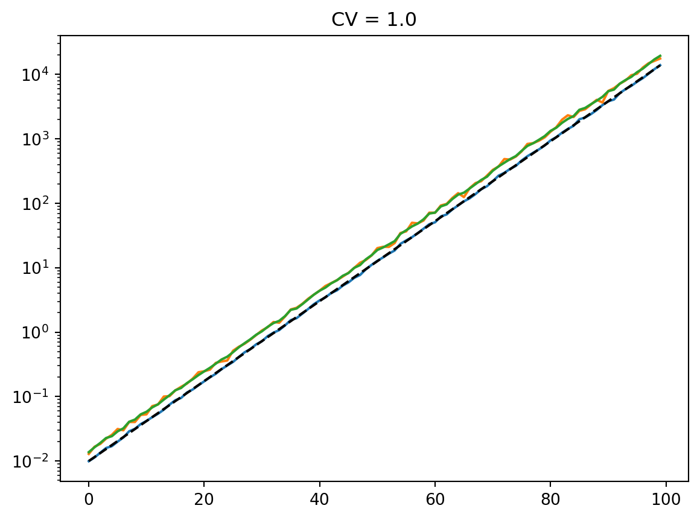
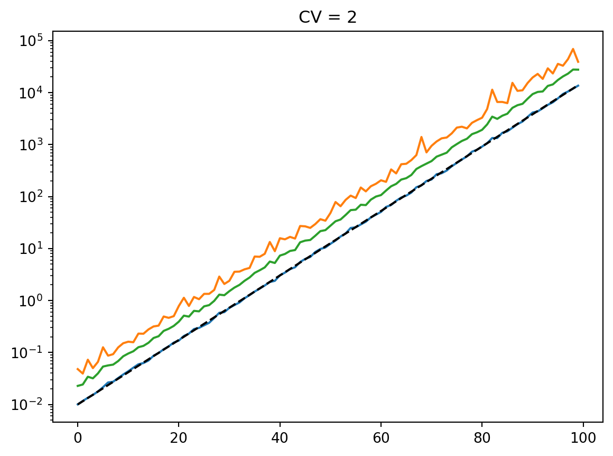
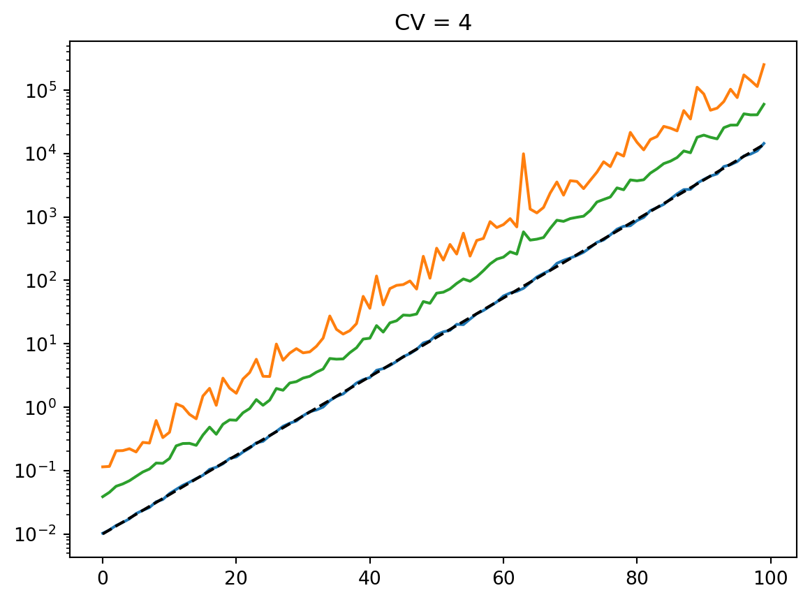
Results
Counts
num_reps = 1000
cvs = [0.25, 0.5, 1.0, 2, 4]
counts_ga = [simulate_counts(prevalence, p2ra, sampling_depth, cv, mean_type="arith", latent_dist="gamma", num_reps=num_reps, rng=rng) for cv in cvs]
counts_la = [simulate_counts(prevalence, p2ra, sampling_depth, cv, mean_type="arith", latent_dist="lognormal", num_reps=num_reps, rng=rng) for cv in cvs]
counts_gg = [simulate_counts(prevalence, p2ra, sampling_depth, cv, mean_type="geom", latent_dist="gamma", num_reps=num_reps, rng=rng) for cv in cvs]
counts_lg = [simulate_counts(prevalence, p2ra, sampling_depth, cv, mean_type="geom", latent_dist="lognormal", num_reps=num_reps, rng=rng) for cv in cvs]Arithmetic mean
to_plot = 100
plt.figure(figsize=(8,4))
for i, cv in enumerate(cvs):
ax = plt.subplot(2, len(cvs), i + 1)
ax.semilogy(time, counts_ga[i][:to_plot].T, '.', color = "C0", alpha = 0.1)
ax.semilogy(time, sampling_depth * p2ra * prevalence, "k--")
ax.set_title(r"$CV = $" + f"{cv}")
ax.set_ylim([1, 1e5])
if i == 0:
ax.set_ylabel("Count")
else:
ax.set_yticklabels([])
ax = plt.subplot(2, len(cvs), len(cvs) + i + 1)
ax.semilogy(time, counts_la[i][:to_plot].T, '.', color = "C0", alpha = 0.1)
ax.semilogy(time, sampling_depth * p2ra * prevalence, "k--")
ax.set_ylim([1, 1e5])
if i == 0:
ax.set_ylabel("Count")
else:
ax.set_yticklabels([])
ax.set_xlabel("Day")
plt.show()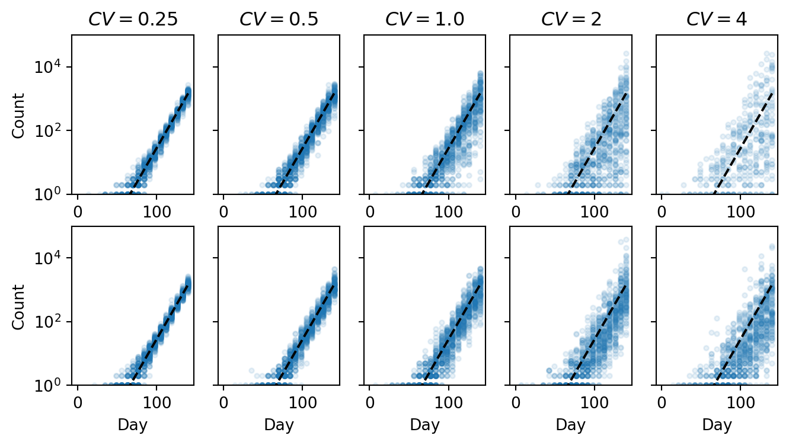
Geometric mean
plt.figure(figsize=(8,4))
for i, cv in enumerate(cvs):
ax = plt.subplot(2, len(cvs), i + 1)
ax.semilogy(time, counts_gg[i][:to_plot].T, '.', color = "C0", alpha = 0.1)
ax.semilogy(time, sampling_depth * p2ra * prevalence, "k--")
ax.set_title(r"$CV = $" + f"{cv}")
ax.set_ylim([1, 1e5])
if i == 0:
ax.set_ylabel("Count")
else:
ax.set_yticklabels([])
ax = plt.subplot(2, len(cvs), len(cvs) + i + 1)
ax.semilogy(time, counts_lg[i][:to_plot].T, '.', color = "C0", alpha = 0.1)
ax.semilogy(time, sampling_depth * p2ra * prevalence, "k--")
ax.set_ylim([1, 1e5])
if i == 0:
ax.set_ylabel("Count")
else:
ax.set_yticklabels([])
ax.set_xlabel("Day")
plt.show()Cumulative counts
plt.figure(figsize=(8,8))
for i, cv in enumerate(cvs):
ax = plt.subplot(4, len(cvs), i + 1)
ax.semilogy(time, np.cumsum(counts_ga[i][:to_plot], axis=1).T, '-', color = "C0", alpha = 0.1)
ax.semilogy(time, np.cumsum(sampling_depth * p2ra * prevalence), "k--")
ax.set_title(r"$CV = $" + f"{cv}")
ax.set_ylim([1, 1e5])
if i == 0:
ax.set_ylabel("Cumulative count")
ax.text(0, 1e4, "Arithmetic\nGamma")
else:
ax.set_yticklabels([])
ax = plt.subplot(4, len(cvs), len(cvs) + i + 1)
ax.semilogy(time, np.cumsum(counts_la[i][:to_plot], axis=1).T, '-', color = "C1", alpha = 0.1)
ax.semilogy(time, np.cumsum(sampling_depth * p2ra * prevalence), "k--")
ax.set_ylim([1, 1e5])
if i == 0:
ax.set_ylabel("Cumulative count")
ax.text(0, 1e4, "Arithmetic\nLognormal")
else:
ax.set_yticklabels([])
ax = plt.subplot(4, len(cvs), 2 * len(cvs) + i + 1)
ax.semilogy(time, np.cumsum(counts_gg[i][:to_plot], axis=1).T, '-', color = "C0", alpha = 0.1)
ax.semilogy(time, np.cumsum(sampling_depth * p2ra * prevalence), "k--")
ax.set_ylim([1, 1e5])
if i == 0:
ax.set_ylabel("Cumulative count")
ax.text(0, 1e4, "Geometric\nGamma")
else:
ax.set_yticklabels([])
ax = plt.subplot(4, len(cvs), 3 * len(cvs) + i + 1)
ax.semilogy(time, np.cumsum(counts_lg[i][:to_plot], axis=1).T, '-', color = "C1", alpha = 0.1)
ax.semilogy(time, np.cumsum(sampling_depth * p2ra * prevalence), "k--")
ax.set_ylim([1, 1e5])
if i == 0:
ax.set_ylabel("Cumulative count")
ax.text(0, 1e4, "Geometric\nLognormal")
else:
ax.set_yticklabels([])
ax.set_xlabel("Day")
plt.show()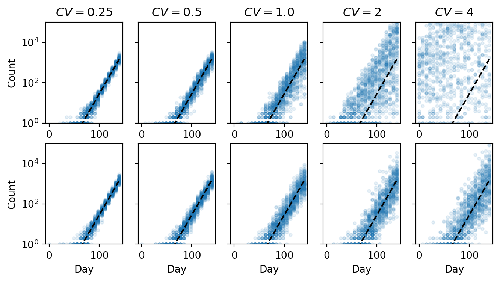
Detection times
thresholds = [2, 100]
detection_times_ga = [[get_detection_times(time, counts, threshold) for counts in counts_ga] for threshold in thresholds]
detection_times_la = [[get_detection_times(time, counts, threshold) for counts in counts_la] for threshold in thresholds]
detection_times_gg = [[get_detection_times(time, counts, threshold) for counts in counts_gg] for threshold in thresholds]
detection_times_lg = [[get_detection_times(time, counts, threshold) for counts in counts_lg] for threshold in thresholds]q = 0.9
ax = plt.subplot(111)
plt.semilogx(cvs, [np.quantile(dt, q) for dt in detection_times_ga[0]], 'o-', color="C0")
plt.semilogx(cvs, [np.quantile(dt, q) for dt in detection_times_la[0]], 'o-', color="C1")
plt.semilogx(cvs, [np.quantile(dt, q) for dt in detection_times_gg[0]], 'o:', color="C0")
plt.semilogx(cvs, [np.quantile(dt, q) for dt in detection_times_lg[0]], 'o:', color="C1")
plt.semilogx(cvs, [np.quantile(dt, q) for dt in detection_times_ga[1]], 's-', color="C0", label="Gamma-Arith")
plt.semilogx(cvs, [np.quantile(dt, q) for dt in detection_times_la[1]], 's-', color="C1", label="LN-Arith")
plt.semilogx(cvs, [np.quantile(dt, q) for dt in detection_times_gg[1]], 's:', color="C0", label="Gamma-Geom")
plt.semilogx(cvs, [np.quantile(dt, q) for dt in detection_times_lg[1]], 's:', color="C1", label="LN-Geom")
ax.set_ylabel("Detection day (90th percentile)")
ax.set_xscale('log', base=2)
ax.set_xlabel("Coefficient of variation")
plt.legend(
handles = [
mlines.Line2D([], [], color="C0", marker="o", label="Gamma"),
mlines.Line2D([], [], color="C1", marker="o", label="Lognormal"),
mlines.Line2D([], [], color="0.5", linestyle="-", label="Arithmetic mean"),
mlines.Line2D([], [], color="0.5", linestyle=":", label="Geometric mean"),
mlines.Line2D([], [], color="0.5", marker="s", label="Threshold = 100"),
mlines.Line2D([], [], color="0.5", marker="o", label="Threshold = 2"),
]
)<matplotlib.legend.Legend at 0x13cd2c310>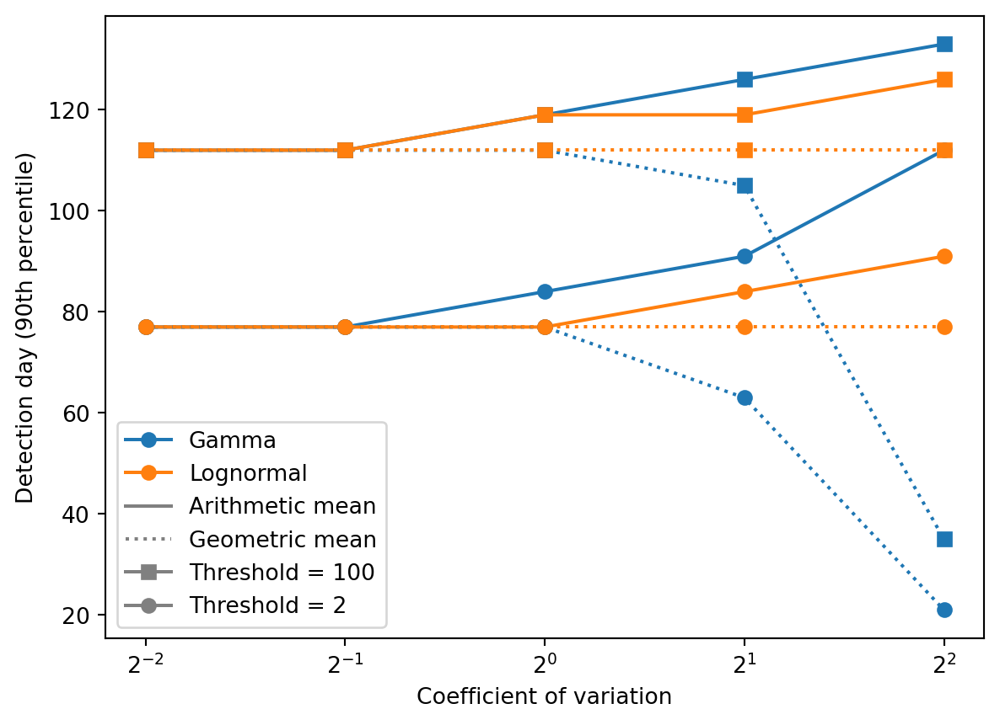